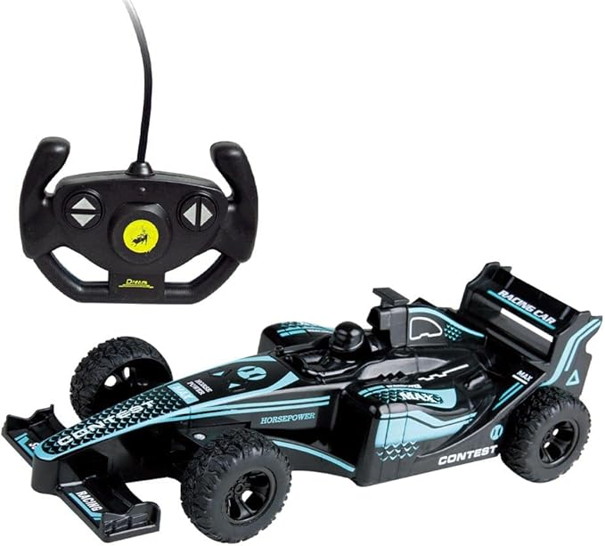
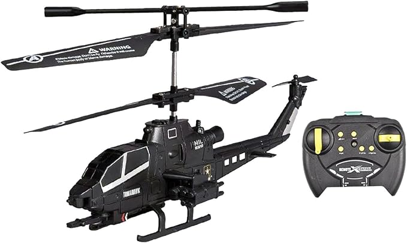

Sinta-se em um verdadeiro canteiro de obras com o Caminhão Betoneira Max! Com controle remoto de longo alcance,
ele permite manobras precisas e possui detalhes realistas que encantam as crianças. Ideal para desenvolver a
coordenação motora e a criatividade através do faz-de-conta.
R$ 189,90
Especificações Técnicas:
Funções: Frente, ré, direita e esquerda.
Escala: 1:20 com detalhes realistas.
Idade Recomendada: Acima de 3 anos.
Alimentação: Pilhas AA (não inclusas).
Material: Plástico ABS de alta resistência.
Carrinho de Corrida F1 Contest High Speed

Domine as pistas com o F1 Contest! Este modelo de alta velocidade possui um design aerodinâmico e pneus de
borracha para melhor aderência. O controle remoto ergonômico garante total domínio do veículo, permitindo
corridas emocionantes em superfícies planas.
R$ 124,50
Especificações Técnicas:
Velocidade: Até 12km/h.
Frequência: 2.4GHz (sem interferência).
Diferencial: Pneus emborrachados.
Design: Réplica de carro de corrida profissional.
Segurança: Certificado pelo INMETRO.
Helicóptero Militar Tomahawk de Controle

Decole para missões incríveis com o Tomahawk Militar! Equipado com sistema de giroscópio para um voo mais
estável e fácil de controlar, mesmo para iniciantes. Possui luzes de LED para voos noturnos e uma carcaça
super resistente a quedas e impactos.
R$ 215,00
Especificações Técnicas:
Canais: 3.5 Canais (Sobe, desce, gira, frente e trás).
Estabilização: Giroscópio integrado.
Alcance: Até 15 metros de distância.
Bateria: Recarregável via USB (inclusa).
Tempo de Voo: Aproximadamente 8 a 10 minutos.
Escavadeira Hidráulica Yigong com Controle
A Escavadeira Yigong é uma réplica de engenharia real! Além de se movimentar, o braço mecânico e a pá
são totalmente funcionais via controle remoto, permitindo escavar de verdade em areia ou terra solta.
Sua cabine gira 360 graus, proporcionando uma experiência completa de operação de máquinas pesadas.
R$ 349,00
Especificações Técnicas:
Movimentos: Braço articulado e pá funcional.
Rotação: Cabine gira 360°.
Tração: Rodas de lagarta (esteira) para todo terreno.